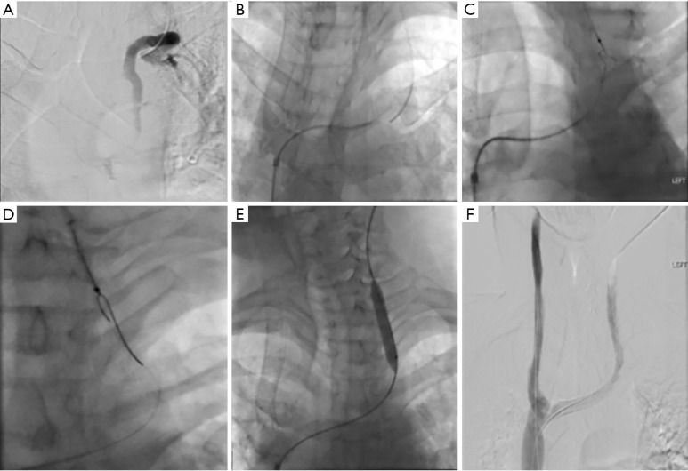
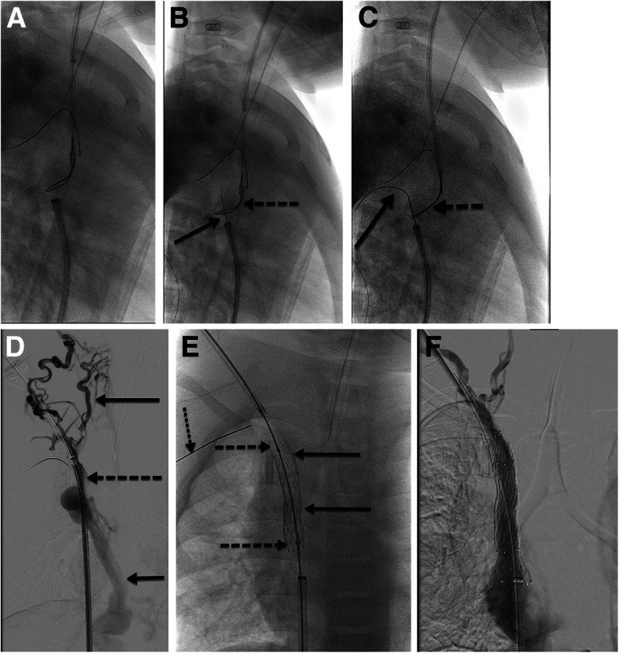
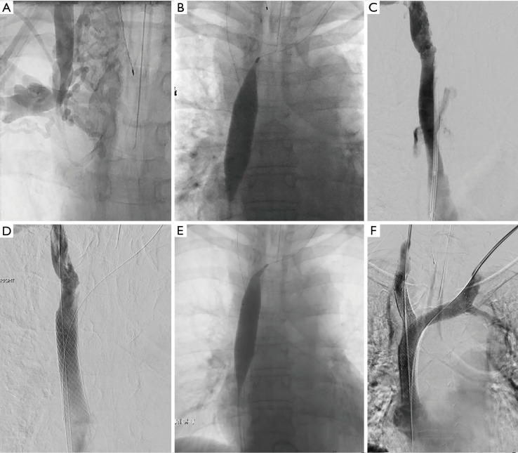

3043 — Hẹp–tắc tĩnh mạch chủ trên lành tính ở trẻ sau catheter trung tâm: đọc CTV/MRV và quyết định trước shunt VA
Tags: pattern:hep-tinh-mach pattern:tuan-hoan-bang-he pattern:huyet-khoi-tinh-mach vung:trung-that protocol:CTV-nguc protocol:stent-tinh-mach score:SIR-CVO
Mức chắc chắn (certainty): tổng hợp y văn (literature synthesis) — ghép tổng quan kỹ thuật tái thông tĩnh mạch hệ thống ở trẻ (CVIR Endovasc 2020, PMC7474020), tổng quan tắc tĩnh mạch trung tâm ngực dưới góc nhìn điện quang can thiệp (Cardiovasc Diagn Ther 2023, PMC9971304), tổng quan quản lý hội chứng tĩnh mạch chủ trên (J Vasc Surg Venous Lymphat Disord 2026, PMC13098589), ca hẹp–tắc cả tĩnh mạch chủ trên và dưới ở trẻ (Pediatr Nephrol 2026, PMC13009132) và ca bắc cầu tĩnh mạch–tĩnh mạch ở trẻ (EJVES Vasc Forum 2023, PMC10310466). Không có ca nguyên văn do nhóm tự chụp.
Câu hỏi thực hành: bé 4 tuổi, não úng thủy sau xuất huyết, ổ phúc mạc đã hỏng, cần shunt não thất–nhĩ (ventriculoatrial, VA). Tiền sử 7 lần đặt catheter tĩnh mạch trung tâm (nuôi dưỡng, kháng sinh, gây mê). Trước mổ, bác sĩ phải trả lời: tĩnh mạch chủ trên (superior vena cava, SVC) còn thông không? Nếu hẹp thì có nong/stent trước không, hay chọn đường khác? Stent ở trẻ 4 tuổi có "lớn theo trẻ" được không? Bài chốt ba câu hỏi của tĩnh mạch trung tâm ở trẻ: (1) hẹp bao nhiêu và còn đường dự phòng nào (phân độ SIR)? (2) có triệu chứng không — vì hẹp không triệu chứng thì KHÔNG can thiệp? (3) nếu can thiệp, stent có lớn theo trẻ được không (trẻ chưa cốt hóa xương)? Đây là bài của người đặt shunt, không phải bài hội chứng SVC do ung thư — phần ung thư/người lớn đã có ở 093. Nối 3041 – Shunt não thất–nhĩ, 3002 – Chọn đích VPL/VA khi ổ bụng hỏng.
1. Tổng quan bệnh học – cơ chế hình ảnh: vì sao catheter "lành tính" lại làm hẹp SVC
- Cơ chế ba bước (Virchow + mô bệnh):
- Ứ trệ tại chỗ: mô hình dòng chảy cho thấy tốc độ dòng quanh catheter trung tâm giảm mạnh, và quanh catheter ngoại vi (PICC) có thể giảm tới 93%; mức giảm tăng theo tỷ lệ catheter/lòng mạch (Cardiovasc Diagn Ther 2023, PMC9971304). Ở trẻ, lòng mạch nhỏ nên cùng một catheter 4–5 Fr chiếm tỷ lệ lòng mạch lớn hơn nhiều so với người lớn — đây là suy luận cơ học, không phải số đo ở trẻ.
- Tổn thương nội mạc do catheter tì vào thành mạch → tăng sinh nội mạc (neointimal hyperplasia); catheter đi qua nhiều điểm gấp khúc (cảnh trong trái, tay đầu trái) làm nhiều điểm tì hơn → tỷ lệ tắc cao hơn ở bên trái (Cardiovasc Diagn Ther 2023, PMC9971304).
- Huyết khối trên nền hẹp → tắc hoàn toàn; tổng quan này ghi nhận ~8% trẻ đặt PICC có huyết khối liên quan catheter trong một loạt 265 trẻ, phần lớn không triệu chứng (CVIR Endovasc 2020, PMC7474020, dẫn Menéndez 2016).
- TẠI SAO trẻ thường KHÔNG có hội chứng SVC dù tắc: hẹp tiến triển chậm (tuần–tháng), đủ thời gian mở tuần hoàn bàng hệ (tĩnh mạch liên sườn, azygos, tĩnh mạch thành ngực, plexus quanh sống). Vì vậy tắc SVC mạn tính ở trẻ thường là phát hiện tình cờ trên CT, không phải cấp cứu; ngược lại tắc cấp do huyết khối mới gây phù mặt–cổ–tay nhanh.
- TẠI SAO hẹp "im lặng" lại quan trọng với shunt VA: shunt VA đổ toàn bộ DNT vào SVC, làm lưu lượng qua đoạn hẹp tăng lên — giống nguyên lý "hẹp tĩnh mạch bị lộ ra khi tạo fistula" (J Vasc Surg Venous Lymphat Disord 2026, PMC13098589 ghi nhận hẹp SVC không triệu chứng có thể lộ ra khi đặt đường mạch máu lọc máu). Hệ quả: một SVC hẹp 50% có thể chịu được dòng tĩnh mạch bình thường nhưng không chịu được thêm dòng DNT → đánh giá SVC TRƯỚC khi đặt VA, không phải sau khi trẻ đau đầu.
- Ngưỡng định lượng để đọc: hẹp SVC trên CT được lượng hóa bằng diện tích cắt ngang, với ngưỡng < 1,07 cm² gợi ý hẹp/chèn ép có ý nghĩa (chi tiết và bảng phân độ Stanford-Doty/Kishi ở 093); đường kính SVC người lớn 2,1 ± 0,7 cm — ở trẻ phải chuẩn hóa theo cân nặng/diện tích cơ thể, chưa có bảng chuẩn riêng.
- Vì sao hình ảnh học ở trẻ khó hơn người lớn: SVC trẻ nhỏ (vài mm), nhiều bàng hệ nhỏ; siêu âm Doppler gần như không đánh giá được SVC; MRV có độ phân giải 1–2 mm nhưng thường cần gây mê; CECT có độ phân giải 0,2–0,3 mm nên thường là lựa chọn thực tế ở trẻ nhỏ, dù có bức xạ (CVIR Endovasc 2020, PMC7474020).

Chuỗi A→F của hình gốc: A — chụp tĩnh mạch cảnh trong trái: SVC tắc, thuốc chỉ đi vào lưới bàng hệ; B, C — dây cứng đi qua ổ tắc từ đường đùi; D — nong bóng; E — đặt stent; F — lưu thông thẳng vào nhĩ phải, bàng hệ giảm. Đây là "chữ ký" hình ảnh của tắc SVC mạn lành tính: không có cột thuốc liên tục vào nhĩ, chỉ có bàng hệ. Nguồn: Cardiovasc Diagn Ther 2023 (PMC9971304), CC BY-NC-ND 4.0, nguyên bản.2. Mẫu hình + chẩn đoán phân biệt theo vị trí và theo cơ chế (gamut)
- Gamut theo vị trí (theo phân độ SIR 2018 — dùng để mô tả và chọn đường can thiệp): tổn thương một bên cảnh trong/tay đầu (Type 1) · một bên tĩnh mạch tay đầu (Type 2) · hai bên tĩnh mạch tay đầu nhưng còn đường qua SVC (Type 3) · tắc SVC thực sự, không còn đường trực tiếp về nhĩ (Type 4) (Cardiovasc Diagn Ther 2023, PMC9971304).
- Gamut theo cơ chế: huyết khối cấp (< 14 ngày, mềm, dây đi qua dễ) · **hẹp/xơ mạn** (> 14 ngày, có vôi hóa trong lòng, nhiều bàng hệ) · chèn ép ngoài (khối trung thất, xơ trung thất) · hẹp sau can thiệp (tái hẹp trong stent) (CVIR Endovasc 2020, PMC7474020).
- Gamut theo hình thái trên CTV: hẹp hình nhẫn (do catheter tì) · tắc có "nắp" (venous cap) — điểm vào của lòng mạch gốc, là bia để tái thông · tắc dài > 3 cm (khó, nguy cơ cao khi tái thông "sắc") · tắc kèm bàng hệ qua azygos · hẹp trong stent.
- Chẩn đoán phân biệt "SVC hẹp trên CT" — đừng nhầm giả tổn thương:
- Máu chưa ngấm thuốc từ tĩnh mạch đối diện đổ vào SVC → "khuyết thuốc" giả trên thì tĩnh mạch; xử lý bằng tiêm hai tay hoặc thì muộn hơn.
- Bó sợi cơ tim/van dạng mạng (rete) bẩm sinh ở SVC → hình mạng lưới, không phải huyết khối.
- Bàng hệ nội tạng–phổi (hội chứng gan–phổi) không phải hẹp SVC.
- Bệnh lý trung thất (u, hạch, xơ trung thất) → hẹp do chèn ép ngoài, cần CT có cản quang đánh giá mô mềm quanh mạch.
3. Bảng so sánh phân biệt (ma trận đối chiếu)
3a. Nguyên nhân hẹp–tắc SVC: lành tính do catheter so với các nguyên nhân khác
| Thực thể (entity) | Hình ảnh điển hình | Chốt vào (rule-in) | Chốt loại (rule-out) | Gợi ý xác nhận |
|---|---|---|---|---|
| Hẹp/tắc do catheter (lành tính) | Hẹp hình nhẫn/vát đúng đoạn catheter nằm, thành mạch dày đều, bàng hệ phong phú, không có khối trung thất | Tiền sử catheter/PICC/port cùng bên + hẹp khu trú đúng vị trí đầu catheter | Có khối trung thất chèn ép, hạch to, xâm lấn thành mạch → nghi ác tính | CTV có cản quang; đối chiếu vị trí catheter cũ trên phim/hồ sơ |
| Hội chứng SVC do ung thư | Chèn ép ngoài, khối trung thất, hẹp dài, bờ ngoài, có thể xâm lấn | Khối trung thất + hẹp SVC + triệu chứng tiến triển nhanh (ngày–tuần) | Thành mạch đều, không khối, tiền sử catheter → lành tính | Sinh thiết khối; PET-CT |
| Huyết khối cấp | Khuyết thuốc trong lòng, mạch giãn, bờ rõ, không bàng hệ nhiều | Khởi phát < 14 ngày, đau/phù cấp, D-dimer tăng | Bàng hệ dày + vôi hóa trong lòng → mạn | Siêu âm/CTV; cân nhắc Doppler |
| Xơ trung thất (fibrosing mediastinitis) | Canxi hóa hạch trung thất, hẹp dài, có thể hẹp cả phế quản/động mạch phổi | Canxi hóa + hẹp nhiều cấu trúc trung thất | Tổn thương đơn độc đúng vị trí catheter → nghĩ do catheter | CT ngực có cản quang; bối cảnh nhiễm nấm lao |
3b. Chọn phương thức hình ảnh ở trẻ nghi hẹp SVC
| Phương thức | Ưu điểm | Hạn chế / ngưỡng | Khi nào chọn |
|---|---|---|---|
| Siêu âm Doppler | Không bức xạ, làm tại giường, đánh giá được tĩnh mạch cổ/tay | Không thấy rõ SVC, không đánh giá được bàng hệ sâu | Sàng lọc tĩnh mạch ngoại vi, theo dõi sau can thiệp |
| CECT/CTV | Độ phân giải 0,2–0,3 mm, thấy bàng hệ, đo được chiều dài/đường kính để chọn stent | Bức xạ + cản quang; bơm một tay có thể bỏ sót | Lựa chọn thực tế ở trẻ nhỏ khi cần kế hoạch can thiệp (CVIR Endovasc 2020) |
| MRV | Không bức xạ, đánh giá mô mềm và bàng hệ | 1–2 mm, thường cần gây mê ở trẻ nhỏ, hạn chế sau khi có stent (artifact kim loại) | Trẻ lớn hợp tác được, theo dõi trước can thiệp |
| Chụp mạch (DSA/venogram) | Chuẩn vàng, đo gradient, can thiệp luôn | Xâm lấn, cản quang, bức xạ | Khi đã quyết định can thiệp hoặc cần xác nhận trước shunt VA |
4. Protocol – phân độ SIR – kỹ thuật can thiệp và ngưỡng "làm hay không làm"
- Nguyên tắc đầu tiên (dễ bị vi phạm nhất): KHÔNG can thiệp hẹp KHÔNG triệu chứng — can thiệp trên hẹp không triệu chứng đẩy nhanh tiến triển và có thể làm mất bàng hệ, khiến bệnh nhân tắc có triệu chứng sau đó (Cardiovasc Diagn Ther 2023, PMC9971304). Với trẻ chuẩn bị shunt VA, hẹp không triệu chứng nhưng sẽ phải chịu thêm dòng DNT là vùng xám: cần đo gradient + đánh giá bàng hệ, không tự động đặt stent.
- Phân độ SIR 2018 (dùng để ghi báo cáo và chọn chiến lược):
flowchart TD
A[Tắc tĩnh mạch trung tâm ngực trên CTV] --> B{Tĩnh mạch tay đầu và SVC còn thông?}
B -->|Có, chỉ tắc 1 bên cảnh trong/tay đầu| C[Type 1A-1D]
B -->|Không| D{Tắc một bên tĩnh mạch tay đầu?}
D -->|Có| E[Type 2A-2B]
D -->|Không| F{Hai bên tay đầu tắc nhưng còn đường qua SVC?}
F -->|Có| G[Type 3]
F -->|Không| H[Type 4: tắc SVC thực sự]
C --> I[Thường chỉ cần đường vào thay thế]
E --> I
G --> J[Cân nhắc tái thông bên còn lại]
H --> K[Tái thông ± stent, hoặc đường vào bất thường: tĩnh mạch chủ dưới, nhĩ phải trực tiếp]
Phân độ SIR 2018 cho tắc tĩnh mạch trung tâm ngực (Cardiovasc Diagn Ther 2023, PMC9971304); Type 4 là tổn thương quyết định chiến lược shunt VA.
- Kỹ thuật tái thông (các con số phải nhớ):
- Heparin trong thủ thuật: 100 U/kg, tối đa 5.000 U (CVIR Endovasc 2020).
- Bóng nong: bóng áp lực cao 10–16 mm cho SVC người lớn; ở trẻ chọn theo đường kính đoạn lành kề bên (J Vasc Surg Venous Lymphat Disord 2026; CVIR Endovasc 2020).
- Stent: quá cỡ 10–20% so với đường kính mạch lành, chiều dài ≥ 4 cm để giảm di chuyển; tránh che tĩnh mạch cảnh trong (còn dùng cho đường vào sau này); nếu cần che nhánh lớn → kỹ thuật "kissing stent" (Cardiovasc Diagn Ther 2023, PMC9971304).
- Trẻ chưa cốt hóa xương: có thể đặt stent vùng trên cơ hoành (tay đầu/SVC) nếu stent có thể nong to dần; cách làm phổ biến là stent tự nở đặt trong stent nong bóng → tạo "đồng hồ cát" bị giới hạn, sau đó nong lại theo tuổi (CVIR Endovasc 2020). Ca 4 tuổi minh họa: Palmaz + Zilver 14 mm, lần đầu chỉ nong tới 10 mm vì lòng mạch gốc nhỏ, dự kiến nong lại khi trẻ lớn.
- Tái thông "sắc" (sharp recanalization): chỉ khi kỹ thuật tù thất bại; nguy cơ tăng khi đoạn tắc > 3 cm; có thể dùng IVUS để giảm số lần đi kim (CVIR Endovasc 2020).
- Biến chứng nặng nhất — vỡ SVC → chèn ép tim: xử lý bằng nong bóng giữ 3 phút, stent có màng (covered stent), và dẫn lưu màng tim cấp cứu (CVIR Endovasc 2020; J Vasc Surg Venous Lymphat Disord 2026).
- Kết quả can thiệp — đọc đúng mức bằng chứng:
- SVC lành tính (người lớn): stent cho thông sơ phát 40%, thông thứ phát 80% trong một loạt 30 bệnh nhân; nhóm lọc máu chỉ 11%/56% (J Vasc Surg Venous Lymphat Disord 2026, bảng tổng hợp).
- Biến chứng stent SVC: ~9% tổng, tử vong 1–2%; tái hẹp 10,5%, tái phát 10,8% (tổng quan 2.200 bệnh nhân) (J Vasc Surg Venous Lymphat Disord 2026).
- Trẻ em: chưa có tỷ lệ thông stent SVC đáng tin cậy — chủ yếu ca lẻ; stent tĩnh mạch chủ dưới/chậu ở trẻ có thông sơ phát 64–100% ở 12 tháng, thông có hỗ trợ/thứ phát 100%; chưa rõ quá 36 tháng (CVIR Endovasc 2020).
- Stent chuyên dụng tĩnh mạch (Vici): 100% ở 6 tháng, 94% ở 12 tháng trong 20 bệnh nhân người lớn — không phải dữ liệu trẻ (Cardiovasc Diagn Ther 2023).
- Quyết định trước shunt VA — 3 lựa chọn khi SVC hẹp/tắc:
- Tái thông + stent SVC rồi đặt VA qua stent (ưu tiên nếu còn đầu xa đủ chỗ và trẻ đã/lớn gần cốt hóa).
- Đường vào thay thế: cảnh trong đối diện, đường tĩnh mạch chủ dưới/gan (transhepatic) khi SVC tắc hoàn toàn, hoặc nhĩ phải trực tiếp.
- Đổi đích dẫn lưu: VPL nếu phổi lành và trẻ > 4–5 tuổi, hoặc ETV nếu não thất giãn đủ.
- Ca "đường cùng" để thấy giới hạn của can thiệp: bé 5 tuổi (13,1 kg) tắc hoàn toàn cả SVC và tĩnh mạch chủ dưới sau nhiều lần đặt catheter; tái thông nội mạch thất bại → đặt catheter thận nhân tạo trực tiếp vào nhĩ phải qua mở xương ức nhỏ, dùng ống màng tim bò 8 × 3 cm làm đường hầm bảo vệ; lưu lượng ~95 mL/phút = 7,2 mL/kg/phút (Pediatr Nephrol 2026, PMC13009132). Bài học: khi cả hai tĩnh mạch chủ tắc, "đặt shunt VA" không còn là chuyện nong bóng — phải chuyển chiến lược.
- Bắc cầu ngoại khoa ở trẻ (khi nội mạch thất bại): bé 10 tuổi tắc tĩnh mạch dưới đòn trái sau 2 đợt catheter cảnh trong hai bên, mỗi bên 2 tháng, nong bóng thất bại → bắc cầu tĩnh mạch nách – tĩnh mạch chậu ngoài bằng mảnh ghép PTFE 8 mm × 60 cm; phù tay và loét giảm sau mổ (EJVES Vasc Forum 2023, PMC10310466).

*Hình gốc của một bé 4 tuổi chạy thận nhân tạo: A–C — dây và ống thông đi từ đường bẹn; D — chụp tĩnh mạch: tắc cả hai tĩnh mạch cảnh trong và hai tĩnh mạch tay đầu, thuốc chỉ đi qua lưới bàng hệ cổ và tĩnh mạch azygos; E — "stent complex": một stent gắn bóng (Palmaz) đặt ở đoạn tắc, rồi một stent tự nở (Zilver 14 mm) đặt trong đó, giữa stent chỉ nong tới 10 mm vì lòng mạch gốc của trẻ nhỏ, dự kiến nong rộng dần theo tuổi; F — thuốc chảy thẳng vào nhĩ phải. Đây là hình mẫu của "stent lớn theo trẻ". Nguồn: CVIR Endovasc 2020 (PMC7474020), CC BY 4.0.*5. Biến thể bình thường và cạm bẫy
- Cạm bẫy số 1 — can thiệp hẹp không triệu chứng: hẹp SVC mạn ở trẻ thường không triệu chứng nhờ bàng hệ; nong/stent "cho chắc" có thể phá bàng hệ, gây tắc có triệu chứng và tăng tốc xơ hóa. Chỉ can thiệp khi có triệu chứng hoặc khi dòng DNT của shunt VA sẽ làm hẹp thành có ý nghĩa — và khi đó nên đo gradient trong cùng thủ thuật.
- Cạm bẫy số 2 — đánh giá thấp đường kính mạch: đoạn trước chỗ tắc bị xẹp ("underfilling") làm đo nhỏ hơn thật → chọn stent quá nhỏ → di chuyển/tái hẹp. Dùng IVUS hoặc đo đoạn lành sau chỗ tắc (CVIR Endovasc 2020).
- Cạm bẫy số 3 — di chuyển stent: Wallstent ở đoạn thấp SVC dễ co ngắn/di chuyển do lực hướng tâm không đều; ưu tiên stent tự nở nitinol thế hệ mới/covered stent, quá cỡ 10–20%, dài ≥ 4 cm (Cardiovasc Diagn Ther 2023).
- Cạm bẫy số 4 — che mất đường vào tương lai: stent che tĩnh mạch cảnh trong hoặc tay đầu đối diện làm mất đường đặt catheter/shunt sau này. Trước khi stent ở trẻ, phải trả lời: 20 năm nữa trẻ này cần đường vào ở đâu?
- Cạm bẫy số 5 — vỡ SVC và chèn ép tim: đoạn SVC được màng tim phủ; nong bóng/stent có thể rách thành → máu vào màng tim → chèn ép tim. Nhận biết: đau ngực, tụt huyết áp, hình ảnh màng tim trên siêu âm tại phòng can thiệp; xử lý: bóng giữ 3 phút + covered stent + dẫn lưu màng tim (CVIR Endovasc 2020). Tỷ lệ tử vong của biến chứng này 1–2% trong các loạt lớn (J Vasc Surg Venous Lymphat Disord 2026).

Hình gốc: A — chụp ban đầu: tắc tĩnh mạch tay đầu phải; B — nong bóng; C, D — vỡ đoạn thấp SVC, thuốc thoát ra ngoài lòng mạch, tụ máu màng tim; E — đặt stent có màng bịt chỗ vỡ; F — kiểm tra: không còn thoát thuốc. Đây là biến chứng nặng nhất của can thiệp SVC và là lý do phải có covered stent + sẵn sàng dẫn lưu màng tim. Nguồn: Cardiovasc Diagn Ther 2023 (PMC9971304), CC BY-NC-ND 4.0, nguyên bản.- Cạm bẫy số 6 — "hẹp giả" do kỹ thuật chụp: tiêm một tay trong khi tay kia có dòng chưa ngấm thuốc → khuyết thuốc giả ở chỗ hợp lưu; khắc phục bằng tiêm hai tay hoặc thì muộn (Cardiovasc Diagn Ther 2023).
- Cạm bẫy số 7 — sau khi có stent, MRI không còn đáng tin: artifact kim loại làm không đánh giá được lòng stent; theo dõi bằng siêu âm (hạn chế), CECT, hoặc venogram khi có triệu chứng (CVIR Endovasc 2020).
- Biến thể bình thường: bàng hệ quanh sống/azygos ở trẻ tắc SVC mạn không phải dị dạng; tĩnh mạch cảnh trong trái nhỏ hơn phải là bình thường; van tĩnh mạch cảnh trong có thể tạo hình ảnh "gián đoạn" giả trên CT.
6. Tự lượng giá — Blind Quiz
Ca 1 — Bé 4 tuổi, tiền sử nhiều catheter trung tâm, nay phù mặt–cổ nhẹ, không khó thở. Venogram:
- Gợi ý: thuốc từ tĩnh mạch cảnh trong không vào được nhĩ phải, chỉ thấy lưới mạch quanh cổ–trung thất.
- Câu hỏi: Mô tả tổn thương. Theo SIR 2018 đây là type nào? Có nên đặt stent ngay không?
Bấm để hiện đáp án
- Tắc SVC (Type 4 nếu không còn đường trực tiếp về nhĩ) với tuần hoàn bàng hệ phong phú; dây cứng đã đi qua được ổ tắc, nong bóng rồi đặt stent, sau đó thuốc vào nhĩ phải.
- Không stent ngay nếu không triệu chứng và chưa có kế hoạch tăng dòng qua SVC — can thiệp hẹp không triệu chứng có thể đẩy nhanh tiến triển và làm mất bàng hệ.
- Nếu trẻ sắp đặt shunt VA → đây là lúc đo gradient và cân nhắc tái thông trước, vì shunt sẽ tăng lưu lượng qua đoạn hẹp.
- Nguồn ảnh: Cardiovasc Diagn Ther 2023 (PMC9971304), CC BY-NC-ND 4.0.
Ca 2 — Bé 4 tuổi chạy thận, tắc cả hai tĩnh mạch cảnh trong và hai tay đầu; sau can thiệp:
- Câu hỏi: Vì sao stent chỉ được nong tới 10 mm dù đã đặt trong SVC? Điều gì sẽ làm với stent này khi trẻ lớn?
Bấm để hiện đáp án
- Vì lòng mạch gốc của trẻ 4 tuổi nhỏ; nong hết cỡ ngay có thể rách SVC hoặc di chuyển stent. Cấu hình stent tự nở trong stent gắn bóng tạo "đồng hồ cát" bị giới hạn, cho phép nong lại nhiều lần khi trẻ lớn (serial redilation).
- Theo dõi: siêu âm/CECT/venogram khi có triệu chứng; không dựa vào MRI vì artifact.
- Nguồn ảnh: CVIR Endovasc 2020 (PMC7474020), CC BY 4.0.
Ca 3 — Trong lúc nong bóng SVC, bệnh nhi tụt huyết áp, đau ngực; hình huỳnh quang thấy thuốc thoát ra ngoài lòng mạch:
- Câu hỏi: Chẩn đoán? Ba bước xử lý ngay?
Bấm để hiện đáp án
- Vỡ SVC → máu vào màng tim → chèn ép tim (biến chứng nặng nhất, tử vong 1–2% các loạt lớn).
- Xử lý: (1) nong bóng giữ 3 phút bịt chỗ rách; (2) đặt stent có màng (covered stent) nếu còn thoát; (3) dẫn lưu màng tim cấp cứu + hồi sức; gọi phẫu thuật tim mạch.
- Nguồn ảnh: Cardiovasc Diagn Ther 2023 (PMC9971304), CC BY-NC-ND 4.0.
Bài liên quan chéo
- 3041 – Shunt não thất–nhĩ (VA): khi nào chọn và biến chứng
- 3002 – Shunt não thất–màng phổi & não thất–tĩnh mạch khi ổ bụng thất bại
- 093 – Hội chứng tĩnh mạch chủ trên (người lớn/ung thư)
- 3039 – Nhiễm trùng shunt não thất–phúc mạc
Không dùng để chẩn đoán độc lập khi chưa có người hướng dẫn.